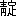

雨で閉じこめられた、赤沢小舎の一夜が明ける。前の日、常念岳から二の股を下りて、私たちの一行より早く、この小舎に着いていられた冠君は、今朝も早く仕度を済まされ、「お先へ」と言って、人夫どもを連れて出て行かれる、「若い衆天幕取れやい」と嘉門次の号令がかかる、天幕を組み立てた糸がスルスルと
手繰られて、雫のポタポタする重い油紙が、
跪まずくように岩盤の上に折り重なる、飯を
炊いだあとの煙が、赤樺の梢を絡んで、心臓形に尖った滑らかな青葉を舐めて、空へ

って行く、その消えぎえの烟の中から、人夫が一人ずつ、荷をしょっては、ひょッくり、あらわれる、嘉門次の愛犬「コゾー」もこの登山隊の一員として交っている。
嘉門次が一行の案内を務めるのは、言うまでもない、雨でグッショリ濡れた青草や、
仆れている朽木からは、人の嗅覚をそそるような古い匂いがして、
噎びそうだ、足が早いので、一丁も先になった嘉門次は、私を振り返って「
他所の人足は使いづらくて困る」とブツブツ言いながら、赤石の河原に出た。
見上げる限り、花崗の岩壁が聳えて、その壁には白い
卓子懸けのような雪が、幾反も垂れている、若緑の樺の木は、岩壁の麓から胸まで、擦り切れるようになった枝を張りつめて、その間から白雪が、細い
斑を引いている、この川は小舎のうしろへ流れ落ちるのだそうだ、水から飛び上った
鶺鴒が、こっちを見ていたが、人が近づいたので、ついと飛ぶ、大石の上には水で描いた小さな足痕が、紋形をして、うす日に光っている。
馬場平（宛字）というところへ来ると、南北の両側に、雪が築き上げられたように多くて、高さは一丈もあろう、それが表面は泥で
帆木綿のように黒くなっているが、その鍵裂きの穴からは、雪の生地が梨の肌のように白く、下は解けて水になっている、その水の流れて行くところは、雪の小さい
峡間を開いて、ちょろちょろと音をさせている。
右の方を仰ぐと、赤沢岳が無器用な円頂閣のように、幅びろく突ッ立って、その花崗岩の赤く禿げた截断面が、銅の
薬鑵のような色をして、冷めたく荒い空気に煤ぶっている。
雪は次第に厚く、幅が
闊く、辷りもするので、人の鳶口に
扶けられて上った、雪のおもては旋風にでも
穿り返された跡らしく、亀甲形の斑紋が、おのずと出来ている、その下には雪解の蒼白い水が、澄みわたって、雪の崖から転げ落ちたらしい大石に、突き当って二派に分れ、呟きながら走って行く、大きな削り板のような雪が、継ぎ目から二ツに截り放されたようになって、平行に裂けて口を明けているのもある。
顧れば峡間から東方の霞沢岳連峰の木山には、どす
玄い雨雲が、
甘藍の大葉を巻いたように冠ぶさって、その尖端が常念一帯の脈まで、包んで来ている、雪の峡流は碧い石や黄な石をひたして、
水嵩も多くなって、樺青く雪白い間を走って行くのが、遙かに瞰下されて、先は森林の底に没している。
雪のおもてには枝の折片が刺されていたり、泥土が流れていたりして、いかにもうす汚ない、白馬岳の雪の美しいことは、こんなものでは無いと、高頭君がしきりに説明してくれる。
谷が狭くなって、崖側を行くと、緩いながらも雪の傾斜で辷るから、ミヤマナナカマドの枝を捉えながら上る、前にも増した雪の断裂で、
草鞋に踏み
蹂った雪片は、山桜の
葩弁のように、白く光ってあたりに飛び散る。
奥赤沢の切れ込みへ来ると、雪は
庖刀を入れたように并行に断裂して、その切截面の高さは、およそ二丈もあろう、右へ除け左へ避けて、思わずも雪の薄氷の上を行くと、パリパリと
氷柱が折れるような音がするので、足下を見ると、大きな穴があって、その穴の蓋の雪が、七八寸の厚さしかない、金剛杖で敲くと、パリッと音がして、崩れ落ちる、穴の下では溶解した水が、渦を巻いている。
前面には
阜のような山が二つ、小隆起をしている、赤沢岳頂上の三角点も、大空を指さしている、谷は次第に高くなる、高くなると共に
蹙まって来て、雪の
蜿ねり方も、波のように烈しいが、嘉門次の語るところに依ると、雪の下は大小の石塊ばかりで、雪解けがしたら、却って歩きづらくて堪まらないということだ。その雪には花崗の
※爛［＃「雨かんむり／誨のつくり」、U+9709、104-17］した砂が
黄粉のようになって、幾筋となくこぼれている、色が桃紅なので、水晶のような氷の脈にも、血管が通っているようだ、雪の断裂面は山から吹き下す風のためであろう、何か巨大な爪で掻き

ったような、掌大な痕を印している。
高山植物も、未だ
芽組んだばかりというところで、樺の青味を除けば、谷一面、褐色と白色とに支配せられている、谷は
莟んでいる故か、思ったより暖かなので、中岳と仮に名をつけた小隆起を屏風にして、小休みをする、赤沢岳は三十度以上の傾斜をして、岩石の赤い筋と雪の白い斑とが、燃えるような、沈むような光り方をしている、あとから重そうに荷を担いで来る人夫も追いついて、一と塊になって休む。
上り初めると蝶ヶ岳が見える、この山もそれに続く熊村岳（宛字）も、谷から渦まき
る
飛沫のような霧に、次第に包まれて来る、足許には
白花石楠花や、
白山一華の白いのが、うす明るく砂の上に映っている。
偃松も徐々と、根を張り始めた。
この傾斜を上り切って、ひょいと顔を出すと、槍ヶ岳の大身の槍尖が、すいと穂を立てている、そうして白い雪が、
涎懸けのように半月形をして、その根元の頸を巻いている。雪の下からは
蒼黯い偃松が、杉菜ほどに小さく見えて、黄花石楠花は、白花石楠花に交って、その間にちらほらしている、一団の霧が槍へ吹っ懸けて、白い烟をパッと立てるので、一時は姿を没したが、又穂先だけ鋭く突き出す。
この辺で高頭君は、
歩度測量計を失くしてしまい、私たち一同人夫と共に、附近の偃松を捜索したが、見当らずにしまった（後にこの歩度メートルは、登山家某君に発見せられて、上高地温泉宿に委托せられ、無事に持主の手に戻った）。今来た路の方を振り向くと、峡間の底から、大霧は雪を包んで乱舞を始めている、それは噴火口の底から、硫烟が幾筋も
縺れ合い、こんぐらかって、騰上するようである。
岩石の大崩れがあって、左の方に石を囲んだ坊主小舎がある、小舎の中は未だ雪が多くて、泊まることは出来そうもない、鍋が一枚蔵してあった、冠君は既に槍ヶ岳登りを終られて、雪を辷り落ちるようにして、下りて来られた、二言三言話を交えて、さっさと下りて行かれる。
ここから見ると、赤沢岳の鞍状の凹みの間から、常念岳が出たが、頂上は雲で見えなかった、昨夜の野営で一日分の食糧が減ったので、人夫の一人を解放して、下山させた。
石の崩れ路を登り始める、人の下りたときの、草鞋や杖で
穿り返された雪は、橇でもいたように生々しい傷がついている、その雪も大石に挟まれたところは、石の熱のためか、溶けて境界線が
一寸した溝になっている、先刻見えなかった常念岳が、イガ栗頭をぬいと出す、高野君と高頭君は、ハンド・レヴェルを持ち出して、ためつすかしつ眺めながら、ここより高いとか、低いとか、
頻に言い合っている。
槍の穂も鼻ッ先に近くなって、崩壊した岩石が折り重なっている、石角を伝わって、殺生小舎へ取りついたが、これでも四人位は泊まれるらしい、強いて詰めれば、八九人は入らぬことはないそうだ、既に今年も泊まった人があると見えて、偃松の半分焦げた枝や炭が、
狼藉している、小舎の屋根に近いところにも、雪の石小舎がある、ここにも
まさかのときには、二人位は寝られそうだ。
槍ヶ岳から下った山稜伝いの、横尾根の外から、穂高山が手に取るように、肩幅の
闊い輪廓を見せる、嘉門次は穂高の方を
頤でしゃくって「あれ行くずらえ」と教えた、穂高山の三角測量標をここから見ると、一本の棒が立っているだけだ、「一本切りだ、風で
ってじゃて、一本ほか無えだ」と、彼はこう言った、そうして「又一本立てよう」と休息の合図をした。（立ちながら休むときは、脊の担い梯子へ、息杖を当てがって、肩を緩めるので「一本立てる」というのである。）
殺生小舎から槍ヶ岳までは、猟師仲間で八丁と言ったものだそうだが、今じゃそうは無いと言うことだ、ここから上りにかかると、いい加減に
疲労れ初めた一行は、足の遅速に従って、離ればなれになる、私は短気な性分だから、むやみに路を貪って、先になった、そうして傍で見ると、存外に鈍い輪廓をした槍ヶ岳の
円柱が、幾本となく
縦に組み合わされた、というよりも大磐石にヒビが入って、幾本にも亀裂したように集合して、その継ぎ目は、固い
乾漆の間に、
布目を敷いたように
劃然としているのが、石油のようにうす紫を含んだ灰色の霧に、吹っかけられて、見るみる
痙攣られたように細くなり、長くなり、分裂の指先をつぼめて、一ツになったかと思うと、又全身を現わして、その霧や雲の間から、避雷針のように突出したのを仰いでいると、全身がもう震動するのである。
やっと槍ヶ岳の頂、といっても槍の穂先からは、まだ
蛭巻ぐらいの位置に当る、平ッたい鞍状地に到着した、槍から無残に崩壊した岩は、洪水のように汎濫している、そうしてこれが巨大なる槍ヶ岳を、目の上に高く聳えしむるために、払われた犠牲であるかと思うと、私は天才の惨酷に戦慄するのである。
槍の穂先へ登る道を忘れたので、むやみに石角に手をかけ、足を托した、石の角は剣の如く鋭く尖って、麻の草鞋が触れるたびに、ゴリゴリ音がする、幾本の繊維が、
蜘蛛の糸のように引き

ぎれて、石の角にへばりついた、肩の尖りを一々登って、ようやく槍の絶頂に突っ立った、槍ヶ岳より穂高へ続く壮大なる岩壁は、石の翼の羽ばたきの、最も強いものであると思われる、眼前の常念山脈では、大天井と燕岳に乱れた雲が、組んず
施つれつしている。
登りついた左の肩には、三角標の破片と見らるる棒が、一本立っている、そこから山稜を伝わって、右の肩へ出ると、小さな木祠があって、小さな木像一個と、青

びた小指ぐらいな銅像が三個、嵌め込まれている、日本山岳会員の名刺が三枚ほど
蔵われている、冠松次郎氏、中村有一氏、加山龍之助氏などで、去年又は本年の登山者である、私も自分の名刺を取り出し、万年筆で、四十三年七月廿七日第三回登山者と、忙しく走り書きして抛げ込んだ、木祠の中には穴の明いた、腐蝕しかかった青銅銭が、落ち散っていた、先刻の上り路で、兼という人足が、ここのお賽銭を拾って村へ還ると、山の御守符というので、五厘銭が白銅一枚には売れると、言った話を憶い出して、
微笑むだけの余裕はあった。
後から来る連中は、やっと尾根にかかって来たが、前に槍に登ったことのある人もいるので、
峰にはもう登らないと決めたらしく、一と塊まりに小さく黒くなって休んでいる、私は
兀々した岩角に一人ぼっちに突っ立って、四方を見廻わした、未だ午前である、硫黄岳の硫烟は、曇り日に映って、東の方へと折れて、連山の頭へ古い綿を、ポツリポツリと
っては投げ出すように、風に吹き飛ばされている、乗鞍岳が濃い
藍色に染まって、沈まり返って、半腹には銀縁眼鏡でも懸けたような雲が、取り巻いている、遠くの峰、近くの山は、厚ぼったい雲の海の中で、沈鐘のように、底も知られず浮き上らずにいる、その瞬間に幻滅する、恐怖すべき透き通った藍色は、大山脈の頭を見ているというよりも、峡間から大海の澄み返って湛えているのを見るようだ、その中で我が槍ヶ岳という心臓が、日本アルプスという堅硬な肉体に、脈を搏っているのだ。
動揺する、動揺する、天上のものは皆動揺して一刻も停まってはいない、霧は乱れ、雲は舞って、山までが上ったり、下ったりしている、森林も
揺々と動いている、私は森厳なる大気の下で、吹き飛ばされそうな帽子をしかと押え、三角標の破片に抱きついて、眼下に黒く石のように団欒している一行の人たちを、瞰下しながら、無限の大虚からの圧迫を、
犇々と胸に受けた。
絶壁の下なる大深谷からは、霧がすさまじいいきおいで、
皺嗄れ声を振り立てて上って来る、近づくほど早くなるかと思うと、端から砕けてサアッと水球を浴びせる、そうして呻りながら、尾根につかまり、槍先へ這いずり上って、犠牲になる生霊もがなと、捜し廻っている。